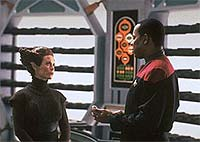
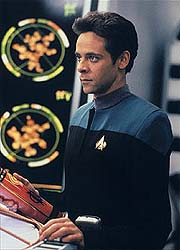
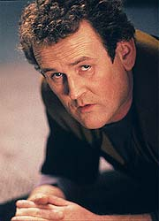
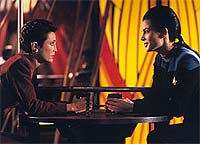

MANCHETE
DO EPISDIO
Show
de O'Brien e Bashir inicia uma
grande amizade entre os dois
Episdio
anterior | Prximo
episdio
Sinopse:
Data Estelar:
desconhecida.
Bashir e O'Brien esto, a bordo de
uma nave de munio T'lani, orbitando o deserto planeta T'lani
III, para ajudar a dois povos recm sados de uma longa guerra
(os T'Lani e os Kelleruns) a eliminar completamente as suas letais
armas biolgicas, os "ceifeiros", na esperana de
perpetuar a paz entre os dois povos.
Quando o ltimo cilindro de ceifeiros est para ser
neutralizado, soldados Kelleruns invadem o laboratrio e matam
todos os cientistas de ambas as raas presentes. O'Brien e Bashir
conseguem se transportar para o planeta (eles no conseguiram se
transportar para o seu explorador, o Ganges).

Algum
tempo depois, os embaixadores destes dois povos aliengenas vo
Deep Space Nine e apresentam a Sisko um vdeo (adulterado),
que mostra todos os presentes no laboratrio sendo desintegrados
em um infeliz acidente, quando O'Brien teria descoberto por engano
um antigo e esquecido dispositivo de segurana, do tipo "ou
voc me d a senha certa em 5 segundos ou morre".
No planeta, O'Brien e Bashir se instalam em um posto militar
abandonado, onde encontram algumas raes e medicamentos de
emergncia, e O'Brien comea a trabalhar em um rdio antigo de
forma a contar aos T'Lani sobre a traio dos Kelleruns. Eles
conversam sobre muita coisa, especialmente casamento. Bashir acaba
por diagnosticar que O'Brien foi contaminado pelos ceifeiros
durante o tiroteio a bordo da nave.
Keiko assiste ao vdeo e afirma com convico que ele falso,
pois O'Brien nunca bebe caf no final da tarde. Sisko e Dax vo
a T'Lani III tentar descobrir a verdade.
Bashir, seguindo as instrues de O'Brien, consegue consertar o
rdio e manda um fraco sinal de socorro para os T'Lani. O'Brien
est morrendo.
Sisko investiga a nave de munies enquanto Dax examina o
computador do Ganges. Ela encontra provas de que O'Brien e Bashir
ainda podem estar vivos.

Os
dois embaixadores chegam ao local onde O'Brien e Bashir esto,
revelando que ambos os governos esto envolvidos na conspirao
para eliminar todos os vestgios dos ceifeiros e de todos que
possuem algum conhecimentos deles. No ltimo momento Sisko
transporta os dois. Depois, utilizando o Ganges para despistar a
nave de munies, os quatro conseguem fugir.
De volta estao, Bashir consegue curar O'Brien. Keiko conta
aos dois a histria de que quando duas pessoas partilham uma
experincia de morte, ela criam um elo eterno. Ao final,
surpreendentemente, O'Brien diz a Keiko que ele de fato costuma
beber caf durante o dia.
Comentrios:
Sem dvida a melhor coisa desde "Necessary
Evil", esta pequena alegoria sobre a guerra biolgica,
com elementos de ao, acaba por terminar sendo
(surpreendentemente) um efetivo episdio sobre pessoas. Foi aqui
que o relacionamento entre Bashir e O'Brien de fato comeou.
Antes que o armagedom realmente chegue, leia as prximas linhas e
descubra o porqu.
to melhor quando a "mensagem da semana" no toma
conta do episdio, como foi feito aqui (o que ser que o
conselho da Federao tem a dizer sobre todo esse incidente?).

A
interao O'Brien-Bashir foi o ponto alto do episdio. As suas
posies sobre a crise em mos so perfeitamente
complementares, a de O'Brien do tipo "estabelecer uma
base" e a de Bashir, "pegar o que interessa e seguir
viagem".
A discusso sobre casamento foi excelente, dando grande
"insight" sobre o "interior" de ambos (e a
histria da bailarina de Bashir foi um doce s). O mais
importante que se pode realmente acreditar nestes dilogos
como o de dois (a ser) amigos conversando. Belo trabalho!
Com tantas diferenas entre os dois (soldado veterano/idealista
querendo ser heri, casado/solteiro, maduro/jovem,
introvertido/extrovertido), com tantas coisas para se aprender um
com o outro e com um acontecimento doloroso (e marcante)
compartilhado, nascia aqui uma real e memorvel amizade.
O impacto, sobre o pessoal da estao, da anunciada morte de
O'Brien e Bashir foi incrivelmente bem atuado e sincero. Odo,
Kira, Dax e Sisko assistindo gravao adulterada e a
posterior conversa entre Keiko e Sisko foram duras de se assistir,
como deveriam ser.
A idia da gravao para convencer a tripulao de DS9 de que
os dois estavam de fato mortos, foi maravilhosa. Entretanto, a idia
de Keiko reconhecer a no-autenticidade da gravao no parece
um elemento que venha de forma fluida da escrita. Parece mais um
meio de fechar a trama do episdio do que qualquer outra coisa
(ver mais sobre "a histria do caf" abaixo).
O "trabalho de detetive" de Sisko e Dax para achar a
dupla perdida fez um bocado de sentido, assim com suas aes em
relao aos T'lani e aos Kelleruns. A trama tambm oferece
(durante a maior parte do episdio) a perspectiva de que apenas
os Kelleruns estariam envolvidos, at a embaixadora T'lani se
apresentar. Belo trabalho aqui!
O que meio ridculo o fato dos conspiradores ficarem
explicando toda a sua conspirao para Bashir e O'Brien com as
armas apontadas para eles, aparentemente esperando Sisko os tirar
de l com o transporte. Algo parecido aconteceu em seguida com os
conspiradores, contatando Sisko e pedindo os dois de volta. Mas
isso no tira o mrito da manobra de Sisko em utilizar o outro
explorador para encobrir sua fuga.
(Aparentemente o roteirista se viu no dilema de preservar o mistrio
do envolvimento dos T'lani at o ltimo momento possvel e usou
a cena em que o grupo de aliengenas encontra O'Brien e Bashir
para expor toda a conspirao para benefcio do espectador.
Talvez tivesse sido melhor eliminar este mistrio desde o incio
e aproveitar este tempo de exposio para algo mais importante:
mais Bashir e O'Brien, claro!)

Muito
boa a direo de Kolbe. Ele e o episdio conseguiram sempre
manter a ateno, quase toda cena tinha uma gancho com algo
interessante acontecendo. Foi muito importante manter um tom
sereno, mesmo com o anncio da morte de Bashir e O'Brien na estao
--funcionou muito bem. As cenas entre O'Brien e Bashir funcionaram
bem tambm e as cenas de ao saram com a competncia usual.
Meaney e El Fadil estiveram maravilhosos juntos e fizeram cada
linha de dilogo soar natural e verdadeira. Brooks
(especialmente) e o resto do elenco regular estiveram timos.
A atuao de Chao (meio "distante", especialmente
quando ela informa a tripulao sobre a "histria do caf")
um pouco difcil de se julgar. Os outros convidados fizeram o
pedido e nada mais.
Boa a cena entre Kira e Dax e a idia de dar os seus dirios a
Dax (acredito eu) uma ttica 100% Bashir de conseguir o corao
de Jadzia (e quem assistiu a "The
Alternate" percebeu que ele no desistiu, s est
tentando ser um pouco mais sutil). A cena seguinte com as duas e
Quark foi sensvel e 100% consistente com a personalidade do
Ferengi.
Foi importante o fato de O'Brien conduzir Bashir nos reparos e
salientar no processo que apenas o seu corpo fora afetado. Da
mesma forma, a fala de Bashir sobre os seus "cursos de extenso
em engenharia" foi um verdadeiro achado e novamente 100%
Bashir.
Para uma praga de tal magnitude estes "ceifeiros" tm
uma grande dificuldade de infectar as pessoas. Temos coisas hoje
em dia que teriam matado O'Brien e Bashir rapidamente dentro do
abrigo.
A "histria do caf" tem duas explicaes plausveis.
Uma seria o fato de Keiko "sacar" inconscientemente que
algo estava errado com a gravao. E a outra, que simplesmente
ela estava em negao, o que tambm responderia pela
"distante" atuao de Rosalind Chao.
"Armageddon Game" mais um exemplo vencedor da
antiga (e infalvel) frmula "arrume um bom motivo para
colocar dois bons atores trancados em algum lugar e os abastea
com bons dilogos".
Citaes
O'Brien - "Extension
courses?"
("Cursos de extenso?")
O'Brien - "I'm not blind, you know."
("Eu no sou cego, voc sabe.")
Bashir - "Of course not --but you are married."
("Claro que no --mas voc casado.")
Trivia:
 Presena de Keiko.
Presena de Keiko.
A relao entre Bashir e O'Brien a
favorita do produtor-executivo Ira Steven Behr, dentre tantas
desenvolvidas ao longo da srie. Ao final da srie Ira fez questo
de tirar uma foto de Colm e Siddig se abraando.
A histria original do roteirista Morgan
Gendel foi a do pessoal da Federao indo a um planeta e
tentando convencer os seus habitantes a se livrar de uma arma do
juzo final. Estes aliengenas do um jeito de codificar a sua
arma no DNA de O'Brien, ou seja, se a Federao quiser destruir
a arma ela ter que matar o engenheiro.
O ttulo do episdio foi uma homenagem
(sugerida por Robert Hewitt Wolfe) ao episdio da srie original
de Jornada "A Taste of Armageddon".
Morgan Gendel logo depois aceitou uma posio
com editor de histrias na excelente srie "Lei &
Ordem".
Este episdio recebeu uma nominao ao Emmy
pelos seus criativos penteados, mas acabou perdendo para
"Doctor Quinn, The Medicine Woman".
Ficha
tcnica:
Escrito por Morgan Gendel
Direo de Winrich Kolbe
Exibido em 31/01/1994
Produo: 033
Elenco:
Avery Brooks como
Benjamin Lafayette Sisko
Ren Auberjonois como Odo
Nana Visitor como Kira Nerys
Colm Meaney como Miles Edward O'Brien
Siddig El Fadil como Julian Subatoi Bashir
Armin Shimerman como Quark
Terry Farrell como Jadzia Dax
Cirroc Lofton como Jake Sisko
Elenco convidado:
Rosalind Chao como Keiko O'Brien
Darleen Carr como E'Tyshra
Peter White como Sharat
Larry Cedar como Nydrom
Bill Mondy como Jakin